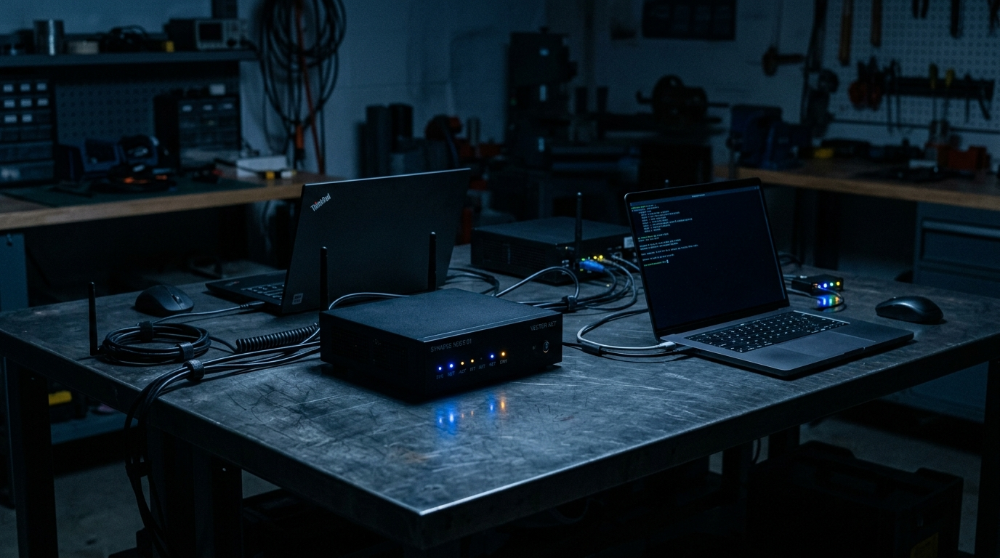

L'agent qui vit dans ton terminal.
Il patrouille quand tu dors. Il répare, consigne et signe son travail. Tes scripts, tes journaux, ta machine. Aucun octet ne quitte le perchoir.
Le repos est une illusion.
Un assistant attend passivement qu'on lui donne un ordre. Un agent sait déjà. Les disques se saturent, les certificats SSL expirent, les sauvegardes tombent en panne silencieuse après une mise à jour d'OS. Ce labeur invisible exige un ouvrier invisible.
Nous l'avons pensé à l'image du corvidé : il mémorise les visages, cache pour l'hiver, reconnaît les outils du système et ne sonne jamais l'alerte pour rien. Au matin, un rapport signé de trois lignes sur la table de nuit. Pas une notification assourdissante : un rapport.
Huit Savoir-Faire Éprouvés
Veille 24/7 Continue
Surveillance temps réel des processus, flux I/O, seuils de saturation disque et validité des certificats réseau. Zéro fuite mémoire constatée.
Zéro Clic Humain
La mission est dictée en langage naturel. Le script bash/python est rédigé, éprouvé en bac à sable, relu et exécuté sans assistance.
Auto-Guérison Active
Un démon ou conteneur s'effondre à 2 h du matin : CORVUS isole le thread fautif, applique la purge, relance et consigne l'incident.
Langage Naturel Vivant
« Sauvegarde les bases Postgres chaque nuit à 3 h, compresse et garde 7 roulements. » Il génère le cron et l'optimise mieux qu'une doc manuelle.
Rapports Signés Ed25519
Chaque action produit une note datée, chiffrée et scellée avec empreinte locale. Aucune intervention anonyme, traçabilité absolue.
Mémoire de Corvidé
Il conserve l'historique des 2 048 dernières pannes, identifie les récurrences et adapte ses procédures sans réinterroger l'humain.
Vol en Escadrille
Du portable de développement au serveur rack d'atelier : vue unifiée du parc sans ouvrir un seul port entrant vers l'extérieur.
Silence Respecté
Exécution à permissions strictes et minimales. Aucune alerte superflue : il ne te réveille que si l'intervention physique est impérative.
Une Nuit Ordinaire, Ligne par Ligne
Le scrub du scroll déroule les horodatages de la nuit. Cliquez sur les onglets pour simuler les différents scénarios de patrouille.
$ corvus veille --nuit --live 23:41:04 [DISQUE] sauvegarde volume /mnt/storage atteint 94 % : compression lz4 enclenchée 01:07:22 [DAEMON] service « photos-worker » tombé (code 137 OOM) : redémarrage isolé, limite mémoire relevée 03:12:49 [PURGE] scan doublons binaires achevé : 118 Go libérés sur partition NVMe 04:55:10 [RÉSEAU] certificat TLS atelier : échéance J-72, tentative de renouvellement ACME (échec ×2 dns) 05:30:00 [SCELLEMENT] rapport signé Ed25519 déposé : 3 lignes rédigées, 0 clic requis $ corvus bilan --matin bilan #2048 · 2 réparations autonomes · 0 escalade requise · intégrité 100%
L'Ingénierie sous la Plume
Trois fondations techniques garantissent l'autonomie, l'isolation et la souveraineté complète de vos données.
Bac à sable eBPF & Namespaces
Chaque script formulé en langage naturel est exécuté dans une cellule éphémère sans accès root arbitraire. Aucun test ne peut impacter l'arborescence système non autorisée.
- Namespaces PID, NET et MOUNT isolés
- Filtrage d'appels système seccomp-bpf
- Retour arrière garanti pendant 30 jours
Empreinte Locale Ed25519
Chaque modification de fichier, redémarrage de service ou note de synthèse est signée cryptographiquement avec une paire de clés locale générée au premier boot.
- Signature cryptographique Ed25519
- Journal append-only SHA-256 infalsifiable
- Zéro télémétrie, zéro ping externe
Protocole Escadrille P2P
Les machines d'un atelier ou d'un cluster local communiquent en réseau maillé chiffré. Si un nœud s'arrête, les nœuds frères prennent le relais d'observation sans serveur central.
- Découverte mDNS / WireGuard local
- Tolérance aux pannes réseau partielles
- Supervision synchrone jusqu'à 41 machines
Ce que les Nuits ont Compté
Ce que Tu ne Vois Jamais
Trois instantanés du calme nocturne : la table de nuit au réveil, le moniteur d'escadrille et les unités matérielles silencieuses.



Les images de CORVUS sont traitées par désaturation et trame matricielle duotone pour se fondre dans le bleu nuit de l'atelier. Aucune illustration décorative générique.
Trois Nuits Ordinaires
Mercredi, 03 h 12
Le disque de sauvegarde atteint 94 %. CORVUS compresse les archives de la semaine en LZ4, purge les artefacts temporaires et réordonne les répertoires. Au réveil : 41 % d'espace disponible, et une note sobre de trois lignes.
Février, Silencieusement
Le script de backup ne tournait plus depuis une mise à jour d'OpenSSH. Aucun monitoring traditionnel n'avait levé d'alerte. CORVUS a constaté le trou dans le rituel, réparé la configuration d'authentification et signé son rapport.
72 h avant l'Échéance
Le certificat SSL expire, deux tentatives échouent suite à un blocage chez l'opérateur DNS. Il retente selon la procédure de secours, échoue une troisième fois, et là seulement, il te réveille. Une alerte justifiée vaut dix alarmes ignorées.
Comparatif sans Concession
Pourquoi un agent autonome local surpasse les vieux crons aveugles et les plateformes SaaS invasives.
| Critère | Cron Classique | Assistant Cloud SaaS | CORVUS (Local) |
|---|---|---|---|
| Exécution des tâches | Aveugle (sans constat) | Dépendante du réseau externe | Autonome & auto-curative |
| Hébergement des données | Local | Serveurs tiers / Cloud public | 100% sur votre machine |
| Gestion des erreurs | Crash silencieux ou spam mail | Alertes bruyantes par SMS/Slack | Réparation en bac à sable |
| Traçabilité des actions | Logs système illisibles | Dashboard opaque hébergé | Rapports signés Ed25519 |
| Intervention requise | Manuelle à chaque panne | Validation permanente requise | 0 clic (médiane constatée) |
Ce qu'en Disent les Repos
« Le matin au café, je lis trois lignes concises et je sais que mon atelier photo est sécurisé. Je n'ai plus ouvert un panneau de configuration système depuis six mois. »
Solène M. — Photographe d'art, 2 postes de travail
« Il a relancé mon cluster de bases de données à 1 h 40 du matin sans faire vibrer mon téléphone, et j'ai eu l'explication complète au réveil. C'est ça, une vraie escadrille. »
Karim B. — Développeur indépendant, 4 machines
« Mes anciennes alertes cloud hurlaient pour des pings manqués de 10 secondes. CORVUS résout, attend le moment juste et ne parle que s'il le faut. Je dors enfin. »
Églantine R. — Ingénieure Infrastructure, 3 serveurs
Choisir Son Perchoir
Code source ouvert et licences perpétuelles pour maîtriser votre infrastructure sans abonnement captif.
Pour dompter une première machine locale en toute autonomie.
- 1 agent local, 1 poste
- Missions système illimitées
- Rapports quotidiens synthétiques
- Communauté & code ouvert
L'escadrille complète avec mémoire longue et auto-guérison avancée.
- Agents illimités, jusqu'à 3 postes
- Missions planifiées et correctifs automatiques
- Rapports signés et archivés (Ed25519)
- Sandbox réseau étendu
- Mises à jour prioritaires
Pour les ateliers, studios et parcs de machines interconnectés.
- Parc de machines illimité
- Console d'escadrille globale en temps réel
- Intégrations matérielles sur-mesure
- Support d'architecture dédié
Ce qu'on Demande au Perchoir
Est-ce que mes données ou mes scripts transitent par le cloud ?
Non, catégoriquement. CORVUS est conçu selon le principe « Local-First ». Le binaire, l'interpréteur de commandes, les fichiers de logs et les clés cryptographiques résident exclusivement sur votre disque dur. Rien ne transite par un serveur externe.
Que se passe-t-il si mon ordinateur est éteint ou débranché pendant la nuit ?
Dès le prochain démarrage de la machine, CORVUS détecte l'interruption temporelle, reprend le rituel de vérification là où il s'était arrêté, et consigne l'heure de coupure dans son rapport de synthèse.
L'agent peut-il endommager un fichier ou supprimer des données par erreur ?
Non. Chaque action potentiellement destructrice (nettoyage de disque, purge de cache, recompilation) passe obligatoirement par un bac à sable temporaire (sandbox). Toutes les actions sont réversibles pendant un délai de 30 jours grâce au journal d'états.
Faut-il être développeur ou expert en terminal pour l'utiliser ?
Non. Vous pouvez lui adresser des instructions en français simple (« Fais une sauvegarde des photos chaque soir à 23h et supprime les doublons »). CORVUS rédige lui-même les scripts, les teste et vous les présente avant la première exécution.
Quelle est la différence fondamentale avec un simple cron job ?
Un cron exécute bêtement une commande sans analyser le résultat ni vérifier si la machine est en souffrance. CORVUS observe l'état du système, diagnostique, corrige les imprévus, consigne les métriques et signe ses bilans.
Puis-je l'associer à mon système de monitoring existant ?
Oui. CORVUS peut exporter ses métriques au format standard Prometheus/OpenTelemetry ou générer des webhooks locaux, mais il fonctionne en totale autosuffisance.
Quatre sur le Fil
Ceux qui conçoivent les boucles de veille et affûtent le regard du corbeau.
Mémoire de corvidé : historique d'incidents croisé et rappel contextualisé dans le rapport matinal.
Sandbox eBPF étendu aux protocoles réseau locaux ; retour arrière instantané sur 30 jours.
Escadrille locale : synchronisation pair-à-pair jusqu'à 41 machines sans passerelle cloud.
Rapports signés cryptographiquement par clé asymétrique Ed25519 locale.
Première nuit de veille silencieuse. Personne ne l'a remarquée. C'était exactement le but.
Et ta nuit, à toi ?
CORVUS s'installe en dix secondes sur Linux et macOS. Zéro configuration cloud, zéro compte obligatoire.